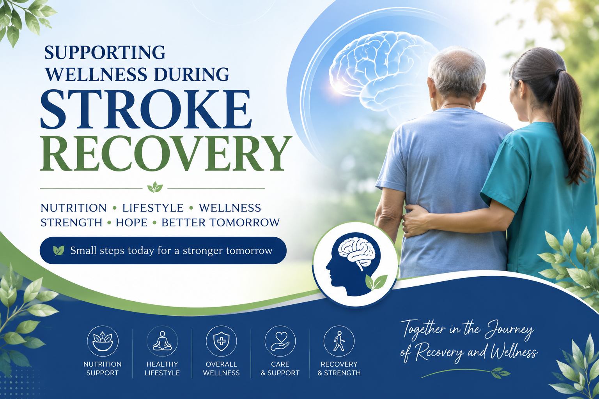

Home > Knowledge Centre > Supporting Wellness During Stroke Recovery

A cancer diagnosis can be a life-changing experience for individuals and their families. Alongside the guidance provided by qualified healthcare professionals, many people explore ways to support their overall well-being through balanced nutrition, healthy lifestyle choices and appropriate nutritional supplementation.
This article has been prepared to provide general educational information about nutrition, wellness practices and the nutritional supplements marketed by Rightway Health International Private Ltd. It also includes customer wellness experience videos shared by individuals describing their personal journeys.
The purpose of this article is to help readers understand the importance of maintaining overall wellness while continuing to follow the advice and treatment plans recommended by their healthcare professionals.
Cancer is a group of diseases in which certain cells grow abnormally and may spread to other parts of the body. Modern cancer care may include surgery, chemotherapy, radiation therapy, targeted therapy, immunotherapy or other treatments, depending on the type and stage of the condition.
During treatment, maintaining good nutrition, adequate hydration, emotional well-being and a healthy lifestyle can play an important role in supporting overall health. Many individuals also choose to discuss nutritional supplements with their healthcare team as part of their personal wellness plan.
Every individual's situation is unique. Decisions regarding treatment and supportive care should always be made in consultation with qualified healthcare professionals who are familiar with the person's medical history and current condition.
Good nutrition helps support the body's normal functions, energy requirements and overall well-being. During periods of illness or recovery, many people work with their healthcare providers to maintain a balanced diet and discuss whether nutritional supplements may be appropriate for their individual needs.
A well-balanced diet provides essential nutrients that support the body's normal functions and overall well-being. Nutritional needs vary from person to person.
Adequate rest, hydration, physical activity where appropriate and emotional support are all important aspects of maintaining overall wellness.
Always discuss any nutritional supplement or major dietary change with your treating doctor or qualified healthcare professional.
The Royal Kit is a combination of nutritional supplement products marketed by Rightway Health International Private Ltd. The information below is based on the manufacturer's suggested usage and is provided for educational purposes. Individual nutritional requirements may differ.
Pack Size
220 grams
Suggested Usage
Approximately 3 grams every morning on an empty stomach using the measuring spoon
provided by the manufacturer.
Approximate Duration
Up to 72 days.
Pack Size
50 ml
Suggested Usage
Approximately 7 drops mixed in 1 litre of drinking water as per the manufacturer's
instructions.
Use throughout the day.
Pack Size
30 ml
Suggested Usage
Apply externally according to the manufacturer's directions.
Approximate usage duration may vary depending on frequency of use.
Pack Size
50 grams
Suggested Usage
Approximately 1 gram mixed with warm water after lunch, following the manufacturer's
instructions.
Pack Size
50 ml
Suggested Usage
Approximately 10 drops in warm water before bedtime, following the manufacturer's
recommended directions.
✔ Five nutritional supplement products
✔ Manufacturer's suggested usage guide
✔ Courier available across India
For current pricing, availability and ordering information, please contact Devamritham directly.
Along with following medical advice, many people choose to adopt healthy eating habits and lifestyle practices that support their overall well-being.
Choose a balanced diet rich in fruits, vegetables, whole grains and other nutritious foods, as advised by your healthcare professional or registered dietitian.
Maintaining adequate hydration is an important part of supporting normal body functions. Follow your healthcare provider's advice regarding fluid intake.
Adequate sleep and proper rest may help support overall well-being and recovery during challenging times.
Some individuals choose to make dietary changes as part of their personal wellness plan. If you are considering changes to your diet, discuss them with your doctor or a qualified nutrition professional to ensure they are appropriate for your individual circumstances.
The following video features a customer sharing their personal wellness experience. These statements represent an individual's own experience and should not be interpreted as typical results or medical evidence.
Watch a customer share their personal journey and how nutritional supplementation became part of their overall wellness routine.
No. Nutritional supplements are not intended to replace professional medical advice, diagnosis or treatment. Always follow the treatment plan recommended by your healthcare team.
Always consult your treating doctor before starting any nutritional supplement, particularly if you are undergoing medical treatment or taking prescription medicines.
For product information, availability and ordering details, please contact Devamritham using the contact information provided below.
Visit the Devamritham Testimonials section and our Knowledge Centre for additional customer wellness experience videos.
In Development
In Development
In Development
For product information, educational resources, availability and ordering details, please contact:
📍 Vandiyur,
Madurai – 625020
📞
+91 97897 07642
📧
tlsuresh13@gmail.com
This article is provided for educational and informational purposes only.
The nutritional supplement products described on this page are marketed by Rightway Health International Private Ltd. Product descriptions and suggested usage are based on information provided by the manufacturer.
Customer wellness experience videos reflect the personal experiences of the individuals featured. These experiences are unique to those individuals and should not be interpreted as typical results, guarantees or medical evidence.
Nutritional supplements are not intended to diagnose, treat, cure or prevent any disease and should not replace professional medical advice, diagnosis or treatment.
Always consult your treating physician or another qualified healthcare professional before making decisions regarding your treatment, diet or use of nutritional supplements.